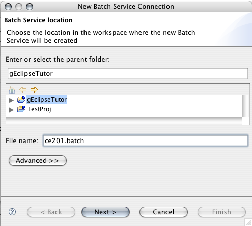
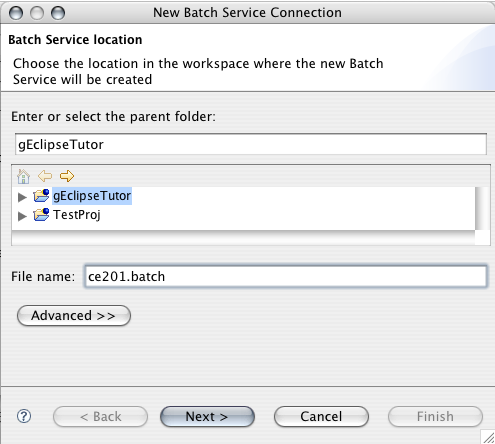
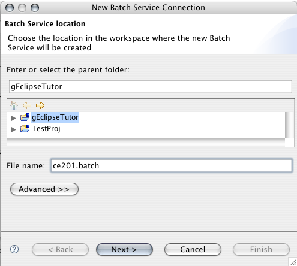
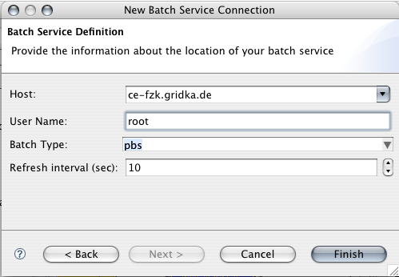
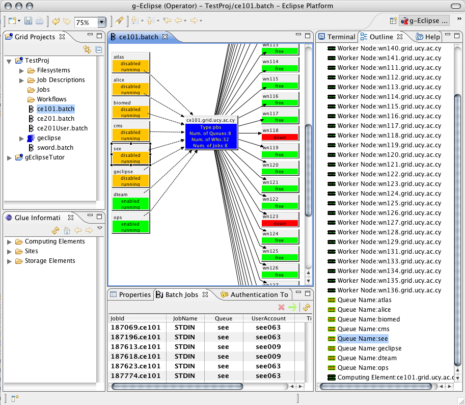
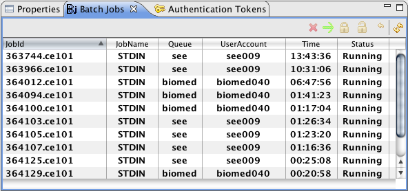

File > New > Batch Service. a dialog opens up where you specify the name of the batch service
and which project it should belong to.

File > New > Batch Service. a dialog opens up where you specify the name of the batch service
and which project it should belong to.

In order to connect to a Batch Service you first have to specify the end-point by using the New Batch Service Wizard.
In order to activate this wizard you go to
File > New > Batch Service. a dialog opens up where you specify the name of the batch service
and which project it should belong to.

Clicking Next will take you to a page where you specify the address of the machine where batch service is running and the user name of your account on that machine.
Clicking Finish will create the batch service holder file and the Batch editor will open.
By clicking on a resource (e.g. Queue, Computing Element, Worker Node) in the Batch editor the jobs that are currently present in that resource will be listed in the Batch Job View
From the context menu of a Computing Element you can (given you have administration rights):
From the context menu of a Worker Node you can (given you have administration rights):
From the context menu of a Queue you can (given you have administration rights):
From the context menu of a batch job in the Batch Job View you can (given you have administration rights):